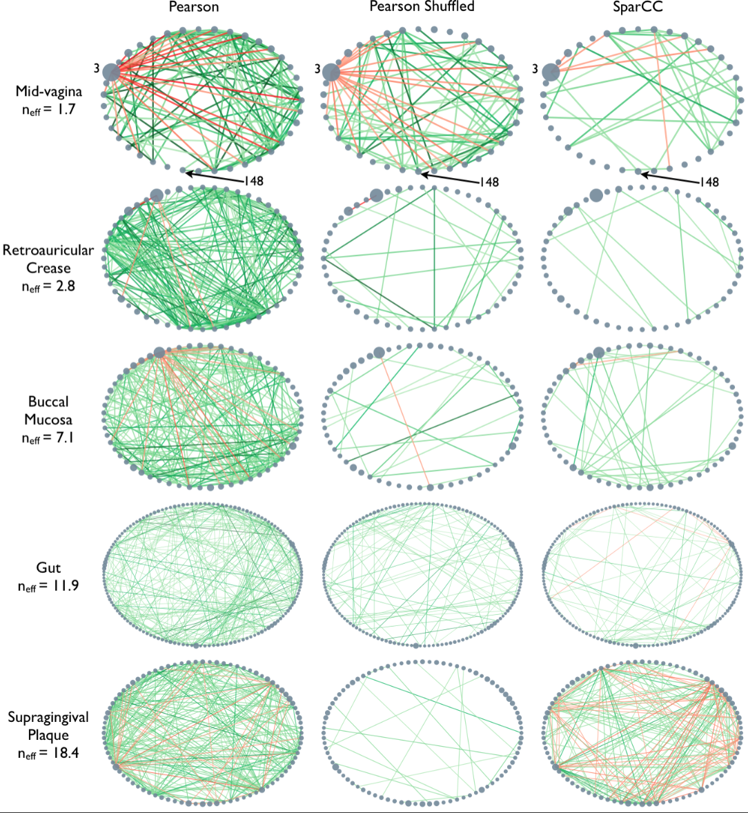

Content from Networks - Introduction
Last updated on 2023-07-11 | Edit this page
Estimated time 120 minutes
Download Chapter notebook (ipynb)
Mandatory Lesson Feedback Survey
Overview
Questions
- How are graphs represented?
- How are graphs visualised?
- What are common types of graphs?
Objectives
- Understanding the notion of a graph
- Explaining nodes and edges represent networks
- The network matrix formalism
- Visualising graphs
- Understanding undirected, directed and bipartite graphs
Example: Protein-protein interactions
Protein-protein interactions (PPIs) (PLoS: Protein–Protein Interactions) refer to specific functional or physical contact between proteins in vivo. Interactions may be dependent on biological context, organism, definition of interaction, and many other factors. An example of PPIs can be seen below.

PPIs may be conceptualised as a network, in order to give greater context to the protein interactions, and to see how changes to one protein may affect another protein several steps removed. A PPI network can be modelled via a graph in which the nodes represent the proteins and the edges represent interactions: an edge from node A to node B indicates protein B interacts with protein A. The diagram above shows the PPI network centred around the protein \(mazG\) in Escherichia coli K12 MG1655. This is part of a toxin-antitoxin system. These systems generally encode pairs of toxin and inhibitory antitoxin proteins, are transmitted by plasmids, and likely serve several biological functions including stress tolerance and genome stabilisation. \(mazG\) regulates the type II toxin-antitoxin system shown in this network, where \(mazF\) is the toxin and \(mazE\) is the antitoxin. More details on the proteins in this network can be seen on STRING-DB (STRING-DB: mazG in E. coli.
At the end of this lesson we are going to use Python to draw this PPI network. Before this however, we shall begin with some examples to familiarise you with the elements and properties of graphs.
An Introduction to Networks
What is a graph?
A graph is an object in mathematics to describe relationships between objects. A simple example of a visual representation of a graph is given below.
This graph contains three objects - nodes or vertices - and three links - edges or arcs - between the nodes. Graphs can be used to represent networks. For a formal definition of a graph see, e.g. the Wikipedia entry.
If the above graph represented a protein-protein interaction network then the nodes would represent three proteins and the edges represent interactions between them. To add further proteins, you add new nodes to the network. To include further dependencies (when there are more nodes), you add edges.
We shall see below how we can build, modify and represent networks in Python.
NetworkX
NetworkX is a Python package for the creation, manipulation, and study of the structure, dynamics, and functions of complex networks.
To use NetworkX and visualise your networks, you can import the whole package.
PYTHON
import networkx as nx
from matplotlib.pyplot import showNodes and Edges
Nodes are a basic unit of network data, and are linked to other nodes by edges, which show the way(s) in which the nodes are connected or related. In NetworkX, a range of Python objects, including numbers, text strings, and networks can be nodes.
Let’s start by creating an empty graph object and then add some nodes to it.
PYTHON
firstGraph = nx.Graph()
firstGraph.add_node('Node A')
firstGraph.add_node('Node B')
firstGraph.add_node('Node C')
print(type(firstGraph))
print('')
print(firstGraph.nodes)
print('')OUTPUT
<class 'networkx.classes.graph.Graph'>
['Node A', 'Node B', 'Node C']We have created a graph called firstGraph, added three nodes, and then printed the type of object and a list of the nodes in this graph. So far, these nodes have no relationship to each other? To specify relationships (representing e.g. interactions) we can add edges to show how the nodes are connected.
PYTHON
firstGraph.add_edge('Node A', 'Node B')
firstGraph.add_edge('Node A', 'Node C')
firstGraph.add_edge('Node B', 'Node C')
print(firstGraph.edges)OUTPUT
[('Node A', 'Node B'), ('Node A', 'Node C'), ('Node B', 'Node C')]Here we created edges between Nodes A and B, A and C, and B and C, and printed a list of these edges. We can also get a summary of how many nodes and edges our graph currently has. At this stage, our graph should have three nodes and three edges. Here is how to check that in NetworkX.
PYTHON
firstGraph.number_of_nodes()OUTPUT
3PYTHON
firstGraph.number_of_edges()OUTPUT
3Visualising networks
We have a basic graph called firstGraph, so let’s
visualise it. In NetworkX, we can use function draw.
PYTHON
nx.draw(firstGraph)
show()With the default settings, we get a triangle with three blue nodes in the corners, connected by three lines. There are no arrowheads on the lines, the network is therefore referred to as undirected.
To make the graph less abstract, we can add labels to the nodes. This is
done setting up a dictionary where we use as keys the names
given to the nodes when they were set up. The single value
is the label to be used for the display.
Through NetworkX we can also dictate the way the nodes are positioned by setting a layout. There are many options, and we are using the spiral layout as an example. For a list of layout options, please check the NetworkX documentation.
PYTHON
firstGraphLayout = nx.spiral_layout(firstGraph)
firstGraphLabels = {
# key : value
'Node A': 'A',
'Node B': 'B',
'Node C': 'C',
}
nx.draw(firstGraph, firstGraphLayout,
labels=firstGraphLabels)
show()
PYTHON
from matplotlib.pyplot import savefigPYTHON
firstGraphLayout = nx.spiral_layout(firstGraph)
firstGraphLabels = {
'Node A': 'A',
'Node B': 'B',
'Node C': 'C',
}
nx.draw(firstGraph, firstGraphLayout,
labels=firstGraphLabels)
savefig('my_network.png', format='png');
show()
You may want to alter the appearance of your graph in different ways.
Let’s say you want the nodes to be red: you achieve this by using the
keyword argument node_color.
PYTHON
nx.draw(firstGraph, firstGraphLayout,
labels=firstGraphLabels,
node_color='r')
show()
Note that, as always, the spelling is the US version, ‘color’.
Creating a Network Matrix
A generic way to define graphs is via a two dimensional array known as the network matrix or adjacency matrix. We won’t go into the details of matrices here but will just show you how to create them in Python.
For our purpose a matrix is a collection of numbers. Let us start by
creating a matrix that contains only zeroes. A very easy way to create a
matrix with zeroes in Python is using zeros from Numpy. The
number of network nodes is equal to the number of rows and columns in
the array.
PYTHON
from numpy import zeros
nodes = 3
my_matrix = zeros((nodes, nodes))
print(my_matrix)OUTPUT
[[0. 0. 0.]
[0. 0. 0.]
[0. 0. 0.]]
We have given the zeros function two arguments, 3 and 3,
and it has created an array of 9 numbers (all of value 0) arranged into
3 rows and 3 columns. This is a square matrix because
the number of rows is equal to the number of columns. We say that this
matrix is of dimension \(3\times 3\).
To check the dimensions of a Numpy array, you can use
shape. Since in the above code we have assigned the matrix
to the variable my_matrix we can call it as follows.
PYTHON
my_matrix.shapeOUTPUT
(3, 3)
We can now access each element of my_matrix and change its
value. To change the element in the second row and the third column we
use the syntax my_matrix[1, 2] where we first specify the
row index and the column index second, separated by a comma.
PYTHON
my_matrix[2, 0] = 1
my_matrix[1, 0] = 1
print(my_matrix)OUTPUT
[[0. 0. 0.]
[1. 0. 0.]
[1. 0. 0.]]PYTHON
n = zeros((4,4))
n[0, 1] = 1
n[1, 2] = 1
n[1, 3] = 1
print(n)OUTPUT
[[0. 1. 0. 0.]
[0. 0. 1. 1.]
[0. 0. 0. 0.]
[0. 0. 0. 0.]]Representing graphs
Now we shall see how a \(3 \times 3\) square matrix can represent a graph with three nodes which we call \(A\), \(B\) and \(C\). Consider the following table where we have taken the matrix elements and labelled both the rows and the columns \(A,B\) and \(C\).

This matrix can represent a graph with three nodes. The value of 1 in the first row and the second column indicates that there is an edge from node \(A\) to node \(B\). Therefore, the row position indicates the node that an edge emanates from and the column position indicates the node that the edge ends on.
We can see that there are four edges in this graph:
from node \(A\) to node \(B\)
from node \(B\) to node \(A\)
from node \(B\) to node \(C\)
from node \(C\) to node \(A\)
The graph has four nodes and three edges.
$n_{0,1} $ or $n[0][1]$ is an edge from node 0 to node 1.
$n_{1,2}$ or $n[1][2]$ is an edge from node 1 to node 2.
$n_{1,3}$ or $n[1][3]$ is an edge from node 1 to node 3.Different Layouts for Visualisation
Now that we know how to create a matrix which can represent the graph, we want to know what the graph coming from this matrix looks like.
First, we set up the network (or: adjacency) matrix in the above table
from scratch. Then we use NetworkX function
from_numpy_matrix to turn our matrix into a NetworkX Graph
object called new_graph. We set the layout to a spiral
layout (as we did before) and then draw the graph.
PYTHON
new_matrix = zeros((3,3))
new_matrix[1, 2] = 1
new_matrix[2, 0] = 1
new_matrix[0, 1] = 1
new_matrix[1, 0] = 1
new_graph = nx.from_numpy_matrix(new_matrix)
newLayout = nx.spiral_layout(new_graph)
nx.draw(new_graph, newLayout)
show()
We haven’t specified labels. We can specify the labels using a dictionary. Let us first see how the nodes are stored to find their Python names.
PYTHON
list(new_graph.nodes)OUTPUT
[0, 1, 2]By default, the nodes are given the names of their indices. We can refer to these indices and assign labels.
PYTHON
newLabels = {
# key : value
0: 'A',
1: 'B',
2: 'C',
}We can now draw the graph again, and specify the new labels A, B, and C.
PYTHON
nx.draw(new_graph, newLayout,
labels=newLabels)
show()
There are many different options available for drawing graphs. Use
help(nx.draw) to get a description of the options available
for the graph as a whole, the nodes and the edges.
We shall first experiment with the graph layout. Converting a
mathematical description of a graph, i.e. an adjacency matrix, to a
graphical description is a difficult problem, especially for large
graphs. The algorithms that perform this operation are known as graph
layout algorithms and NetworkX has many of them implemented. We used
spiral_layout to produce the drawing above. Further
specifications can be made within each layout, and you can access the
details with \(help\).
Some graph layout algorithms have a random component such as the initial position of the nodes. This means that different realisations of the layouts will not be identical.
Do it Yourself
Use the graph layout algorithm called
shell_layoutto plotnew_graph.Draw the graph with a third layout algorithm called
random_layout. Execute the code to draw the graph several times.Draw the graph from the matrix \(n\), created in Exercise 1.1 with the layout algorithm
spectral_layout. Give the nodes the names \(V\), \(X\), \(Y\) and \(Z\).
PYTHON
newLayout = nx.shell_layout(new_graph)
nx.draw(new_graph, newLayout,
labels=newLabels)
show()
PYTHON
newLayout = nx.random_layout(new_graph)
nx.draw(new_graph, newLayout)
show()
# The layout of this graph changes each time you run the code.
PYTHON
n = zeros((4,4))
n[0, 1] = 1
n[1, 2] = 1
n[1, 3] = 1
new = nx.from_numpy_matrix(n)
newLabels = {
0: 'V',
1: 'X',
2: 'Y',
3: 'Z',
}
newLayout = nx.spectral_layout(new)
nx.draw(new, newLayout,
labels=newLabels)
show()
Customising nodes and edges
Now we are going to look at some ways to access and change some properties, or attributes, of the nodes in the graph. We have already changed the node colour from blue to red. Let’s say we want to change the colour to gold (for a list of available names see matplotlib: plot colours), change the node shapes to hexagons (matplotlib: node shapes), and increase the node size. This plot will vary each time you run it, due to the layout algorithm.
PYTHON
new_graph = nx.from_numpy_matrix(new_matrix)
newLayout = nx.random_layout(new_graph)
newLabels = {
0: 'A',
1: 'B',
2: 'C',
}
nx.draw(new_graph, newLayout,
labels=newLabels,
node_color='gold',
node_shape="H",
node_size=2000)
show()You may want to add another node, but only have it connected to one of the existing nodes. Here we add a new node, which is the number 3 (because Python indexes from zero). You can print the nodes and see that you now have four.
PYTHON
new_graph.add_node(3)
print(new_graph.nodes)OUTPUT
[0, 1, 2, 3]We may want to set a new layout for this graph and update the labels to call the new node ‘D’. You will see that the new node is not connected to any other node, because we have not specified how it relates to the other nodes.
PYTHON
newLayout = nx.random_layout(new_graph)
newLabels = {
0: 'A',
1: 'B',
2: 'C',
3: 'D'
}
nx.draw(new_graph, newLayout,
labels=newLabels,
node_color='gold',
node_shape="H",
node_size=800);
show()
We discussed above changing the colour of the nodes in our graph. There are several ways you can specify colour in Python (matplotlib: node shapes). The RGB format is one of these methods used for specifying a colour. The colour is specified via an array of length 3 containing the relative amounts of Red, Green, and Blue. Red is specified via \([[1, 0, 0]]\), blue via \([[0, 0, 1]]\) and green via \([[0, 1, 0]]\). As special cases, \([[0, 0, 0]]\) will give you black, and \([[1, 1, 1]]\) will give white.
PYTHON
new_graph.add_edge(3, 0)
nx.draw(new_graph, newLayout,
labels=newLabels,
node_color='gold',
node_shape="H",
node_size=800);
show()
Instead of altering individual elements of a matrix with zeroes (as we
have done above) you can also create a graph directly from a Numpy
array. You set up a nested list and convert it to a Numpy array using
array.
PYTHON
from numpy import array
matrixFromArray = array([[0, 1, 0, 0],
[0, 1, 0, 1],
[1, 0, 1, 1],
[1, 0, 1, 0]])
my_graph = nx.from_numpy_matrix(matrixFromArray, create_using=nx.DiGraph())
my_graphLayout = nx.spring_layout(my_graph)
nx.draw(my_graph, my_graphLayout)
show()
PYTHON
nx.draw(my_graph, newLayout,
labels=newLabels,
node_color=[[0, 1, 1]],
node_shape="D",
node_size=800)
show()
A number of prototypic networks are the fully connected network (each node is connected to all other nodes); the random network (each node is connected to a random subset of other nodes); and the Watts-Strogatz network (a network with a combination of systematically and randomly assigned edges). They are demonstrated in a video tutorial accompanying this Lesson.
Directed graphs
So far, we have been working with undirected graphs: all the edges between the nodes were independent of the direction in which they were set up and thus represented as lines without arrowheads. Such networks are also referred to as bidirectional. For some systems, such as biochemical reactions, a directed graph is more suited, and gives us more detail on the relationships represented in the network.
In NetworkX, directed graphs are handled using the class
DiGraph. We can make a simple DiGraph by importing a matrix
as above, but specifying that it is a directed graph.
PYTHON
directedMatrix = array([[0, 1, 0, 1],
[0, 1, 1, 0],
[0, 0, 0, 1],
[1, 1, 0, 0]])
directed = nx.from_numpy_matrix(directedMatrix, create_using=nx.DiGraph)
directedLayout = nx.spiral_layout(directed)
directedLabels = {
0: 'A',
1: 'B',
2: 'C',
3: 'D',
}
nx.draw(directed, directedLayout,
labels=directedLabels)
show()
You’ll be able to see in this graph that the edges now have arrow tips indicating the direction of the edge. The edge between node A and node D has an arrow tip on each end, indicating that edge is bidirectional. Node B is also connected to itself.
In NetworkX convention an edge is set up in a network matrix in the direction row \(\rightarrow\) column. Thus, a given row tells us which edges leave the node with that row number. A given column tells us which edges arrive at the node with that column number. Thus the bidirectional edge between node A and node D is given by directedMatrix\(_{3,0}\) and directedMatrix\(_{0,3}\) both being equal to 1.
An entry on the diagonal, directedMatrix\(_{1,1}\), is used for self-connection of node B.
PYTHON
directedMatrix = array([[0, 1, 0, 1],
[0, 1, 1, 0],
[0, 0, 0, 1],
[1, 1, 0, 0]])
directedMatrix[3, 2] = 1
directed = nx.from_numpy_matrix(directedMatrix, create_using=nx.DiGraph)
directedLayout = nx.spiral_layout(directed)
directedLabels = {
0: 'A',
1: 'B',
2: 'C',
3: 'D',
}
nx.draw(directed, directedLayout,
labels=directedLabels)
show()
Bipartite graphs
Bipartite graphs are another graph type supported by NetworkX. These are networks which are made up of two groups of nodes which connect to nodes in the other group, but not with other nodes in the same group. Some ecological, biomedical, and epidemiological networks may be represented by bipartite networks. In NetworkX there is not a specific bipartite class of graphs, but both the undirected and directed methods we have used earlier may be used to represent bipartite graphs. However, it is recommended to add an attribute to the nodes in your two groups to help you differentiate them. The convention in NetworkX is to assign one group of nodes an attribute of 0, and the other an attribute of 1.
PYTHON
from networkx.algorithms import bipartite
myBipartite = nx.Graph()
# Add nodes with the node attribute "bipartite"
myBipartite.add_nodes_from(['h', 'i', 'j', 'k'], bipartite=0)
myBipartite.add_nodes_from(['q', 'r', 's', 't'], bipartite=1)
# Add edges only between nodes of opposite node sets
myBipartite.add_edges_from([('h', 'q'),
('h', 'r'),
('i', 'r'),
('i', 's'),
('j', 's'),
('k', 'q'),
('h', 't')])Here, we set up a bipartite network with 8 nodes. The 0 group has nodes \('h', 'i', 'j', 'k'\), and the 1 group has nodes \('q', 'r', 's', 't'\). The specified edges link nodes from the two groups with each other, but not to any nodes within their own group. NetworkX has a function to check your nodes are connected.
PYTHON
nx.is_connected(myBipartite)OUTPUT
True
This will return either true or false. Be cautious though, this only
tests for connection, not whether your graph is truly bipartite. You can
use the function nx.is_bipartite(myBipartite) from
networkx.algorithms to test whether your network is
bipartite. It will return TRUE if your NetworkX object is
bipartite.
PYTHON
bipartite.is_bipartite(myBipartite)OUTPUT
TrueWe can now plot the bipartite graph, using the layout of your choice. if we include the term \(with\_labels = True\) as we draw the graph, the node names we set earlier become the node labels.
PYTHON
myBipartiteLayout = nx.spiral_layout(myBipartite)
nx.draw(myBipartite, myBipartiteLayout,
node_size=2000,
with_labels=True)
show()This might not look like a bipartite network! But if you check the edges you set up earlier, this is bipartite as no node has an edge with another node in each group. If we want it to look more like a classic bipartite network, we can use the attributes we set up earlier and the module \(networkx.algorithms\) to make a custom layout and more clearly visualise the bipartite nature of this graph.
PYTHON
groupzero = nx.bipartite.sets(myBipartite)[0]
bipartitePos = nx.bipartite_layout(myBipartite, groupzero)
nx.draw(myBipartite, bipartitePos,
node_size=2000,
with_labels = True)
show()Using the bipartite convention of giving one group of nodes the attribute 0 and the other 1 means that you can use this to change other aspects of your graph, such as colour. Here, we use the attributes of the nodes to assign a colour to each group of nodes. The colour list can then be included in the plot.
PYTHON
color_dictionary = {0: 'gold', 1: 'lavender'}
color_list = list()
for attr in myBipartite.nodes.data('bipartite'):
color_list.append(color_dictionary[attr[1]])
print(color_list)OUTPUT
['gold', 'gold', 'gold', 'gold', 'lavender', 'lavender', 'lavender', 'lavender']PYTHON
nx.draw(myBipartite, bipartitePos,
node_size=2000,
font_size=20,
with_labels=True,
node_color=color_list)
show()
A readable introduction to bipartite networks and their application to gene-disease networks can be found in section 2.7 of the online textbook Network Science by A.L. Barabási.
Exercises
Assignment: the Toxin-Antitoxin Network
Use code to create the (undirected) toxin-antitoxin PPI network given at the start of this example. Experiment with the different layout algorithms, the node colour and shape, and the edge color.
Hint:
- Using pen and paper, draw a diagram of the PPI network.
- Decide on the ordering of the nodes. I chose to start with the centre node, and then number them in an anticlockwise direction. (Hint: There are 11 nodes in total.)
- Label your pen and paper diagram with the node numbers.
- Work out all the edges in the graph. Note the numbers of the node at the start of the edge and the node at the end of the edge. (Hint: There are 20 edges in total.)
- Define a \(11 \times 11\) matrix in
Python using the Numpy
zerosfunction. - For each edge, set the corresponding entry in the matrix to 1 (start node number corresponds to row number and end node number corresponds to column number in the adjacency matrix).
- Define a cell array containing your node names and create a NetworkX object.
- Experiment with the layout, colours, node shapes etc.
Remember to use the Python documentation, e.g. using
help() if you have problems (or alternatively use a search
engine such as Google).
To save the graph as an image file, use savefig as we
did earlier.
PYTHON
import networkx as nx
from numpy import zeros
ppi = zeros((11,11))
ppiLabels = {
0: 'mazG',
1: 'mazE',
2: 'mazF',
3: 'relA',
4: 'era',
5: 'rpo2',
6: 'dcd',
7: 'pyrG',
8: 'adk',
9: 'cpdA',
10: 'ygdH',
}
ppi[0, 1] = 1
ppi[2, 1] = 1
ppi[0, 2] = 1
ppi[2, 3] = 1
ppi[0, 3] = 1
ppi[1, 3] = 1
ppi[4, 3] = 1
ppi[5, 3] = 1
ppi[4, 0] = 1
ppi[5, 0] = 1
ppi[5, 6] = 1
ppi[5, 7] = 1
ppi[0, 7] = 1
ppi[8, 7] = 1
ppi[8, 0] = 1
ppi[8, 9] = 1
ppi[8, 10] = 1
ppi[0, 9] = 1
ppi[9, 10] = 1
ppi[0, 10] = 1
ppiGraph = nx.from_numpy_matrix(ppi)
ppiLayout = nx.spring_layout(ppiGraph)
nx.draw(ppiGraph, ppiLayout,
labels=ppiLabels,
node_size=1800,
node_color='lightseagreen',
node_shape="8")
show()
Keypoints
- A Python package
NetworkXis used for studying undirected and directed graphs. - A function
savefigis used to save a graph to a file. -
network matrixoradjacency matrixis a generic way to create graphs as two dimensional array. - In
NetworkX, directed graphs are handled using the classDiGraph. - Bipartite graphs are made up of two groups of nodes which connect to nodes in the other group, but not with other nodes in the same group.
Content from Networks - Quantification
Last updated on 2023-07-11 | Edit this page
Estimated time 120 minutes
Download Chapter notebook (ipynb)
Mandatory Lesson Feedback Survey
Overview
Questions
- How to generate test matrices using NetworkX?
- What is the purpose of the node degree and the degree distribution?
- How can a network be quantified?
Objectives
- Creating network matrices with random edges.
- Quantifying network properties.
- Applying networks concepts to the C. elegans neural network.
PYTHON
import networkx as nx
from matplotlib.pyplot import subplots, showGenerating Test Matrices
NetworkX has a number of ways to create matrices with given
specifications. We have seen in the previous lesson that
e.g. zeros((5,5)) creates a \(5\times 5\) matrix filled with zeroes. This
speeds up the creation of a network matrix with only a few non-zero
entries. Similarly, one can start with function ones from
Numpy to create a network with few zero entries.
However, to test network code we would like to be able to easily create test matrices without having to fill in the information about the edges manually. Typically, one wants to quickly create an arbitrary number of realisations to study e.g. a distribution of network properties.
Here is a way to create matrices with randomly assigned edges using
function randint.
PYTHON
from numpy.random import randint
nodes = 5
rm = randint(0, 2, size=(nodes, nodes))
print(rm)OUTPUT
[[0 1 0 1 0]
[0 0 0 1 1]
[1 0 0 1 1]
[1 0 0 1 1]
[1 0 0 1 1]]Function \(randint\) from the numpy module \(random\) is used to create an array or matrix filled with integers.
The first two arguments, two integer numbers, specify which integers to use. The first number is the smallest integer, the second number is the largest integer plus one. The first two numbers work as \((a, b+1)\) so this function will produce numbers (N) in range specified as: \(a <= N <= b\). In our case entering \((0, 2)\) will produce zeroes and ones. With \((1, 10)\), all integers from 1 to 9 will be used, all with equal probability.
The keyword argument size specifies the dimensions of the
matrix. In our case we want a \(nodes\times
nodes\) matrix for a specified number of nodes. The output of the
code will look different at each function call because each time you
execute the code, Python will assign the zeroes and ones randomly.
There are many ways to create network matrices with different specifications. These can be used to test null hypotheses about experimental data. For example, one can generate networks with the same amount of nodes and edges as in an experimental network but with random assignment of edges to test whether the observed connections are likely to be due to chance. Some biological networks seem to have the so-called ‘small world’ property, where in spite of relatively few connections there are quick ways to get from one node to any other node by tracing a path along combinations of edges.
There is a way to have Python return the same random numbers when using functions like \(randint\) by using the \(seed\) function (also from the module \(random\)). Reproducibility is central to coding, and functions such as this facilitate reproducibility.
The command \(seed(1)\) sets the value of the ‘seed’ used to initialise the random number generator to \(1\). The choice of seed value is arbitrary. The important thing is that specifying a value will mean the random number results are reproducible.
When we specify a starting seed value for the number generator it still produces random numbers but will produce the same set of random numbers each time the code is executed. To test this run the following example:
PYTHON
from numpy.random import seed
seed(1)
rm1 = randint(0, 2, size=(nodes, nodes))
print(rm1)OUTPUT
[[1 1 0 0 1]
[1 1 1 1 0]
[0 1 0 1 1]
[0 0 1 0 0]
[0 1 0 0 1]]And repeated:
PYTHON
seed(1)
rm2 = randint(0, 2, size=(nodes, nodes))
print(rm2)OUTPUT
[[1 1 0 0 1]
[1 1 1 1 0]
[0 1 0 1 1]
[0 0 1 0 0]
[0 1 0 0 1]]Since we set the same (arbitrary) seed for both of these function calls, both produce the same pattern of 1s and 0s. The results are identical:
PYTHON
rm1 == rm2OUTPUT
array([[ True, True, True, True, True],
[ True, True, True, True, True],
[ True, True, True, True, True],
[ True, True, True, True, True],
[ True, True, True, True, True]])PYTHON
players = 3
rounds = 20
throws = randint(1, 7, size=(rounds, players))
print(throws)OUTPUT
[[5 3 5]
[6 3 5]
[2 2 1]
[6 2 2]
[6 2 2]
[1 5 2]
[1 1 6]
[4 3 2]
[1 4 6]
[2 2 4]
[5 1 2]
[4 5 3]
[5 1 6]
[4 2 3]
[1 5 2]
[3 3 2]
[1 2 4]
[6 5 4]
[6 2 4]
[1 1 3]]NetworkX graph types
NetworkX has built-in function to produce classic graphs. For example, a Petersen graph has 10 nodes and 15 edges.
PYTHON
petersen = nx.petersen_graph()
layout = nx.spectral_layout(petersen)
nx.draw(petersen, with_labels=True)
show()
Some stochastic graphs can also be generated simply within NetworkX. A random lobster graph is a graph which becomes a caterpillar graph if all leaf nodes are removed.
PYTHON
nodes = 50
# p1: Probability of adding an edge to the backbone
# p2: Probability of adding an edge one level beyond backbone
p1 = 0.9
p2 = 0.5
lobster = nx.random_lobster(nodes, 0.9, 0.5)
layout = nx.spiral_layout(lobster)
nx.draw(lobster, layout, with_labels=True)
show()The first argument is the number of nodes in the graph backbone, the second argument is the probability of adding an edge to this main backbone, and the third number gives the probability of adding further edges. Try running it several times, and with different values, to see how it changes.
Do it Yourself
Look up the NetworkX documentation, and use the tutorial to plot a Tutte graph.
PYTHON
tutte = nx.tutte_graph()
layout = nx.spring_layout(tutte, seed=1)
nx.draw(tutte, layout,
with_labels=True)
show()
Node degree
Each node within a graph has a number of edges connected to it and this number is referred to as the node (or vertex) degree. For example, consider the protein-protein interation graph generated in the previous Lesson, Exercise 1.5.
Furthermore the degree in directed graphs (or digraphs) can be split into the in degree which counts the number of edges pointing into the node and out degree which counts the number of edges emanating from the node. In the graph generated for Exercise 1.5, the node with index 0 has an out degree of 3, the node with index 0 has an out degree of 3, the node with index 3 has an in degree of 3, and the node with index 1 has a total degree of 4, with an out degree of 2 and an in degree of 2.
PYTHON
from numpy import array
matrixFromArray = array([[0, 1, 0, 0],
[0, 1, 0, 1],
[1, 0, 1, 1],
[1, 0, 1, 0]])
my_graph = nx.from_numpy_matrix(matrixFromArray, create_using=nx.DiGraph)
my_graphLayout = nx.spring_layout(my_graph, seed=11)
nx.draw(my_graph, my_graphLayout,
node_size=1000,
arrowsize=20,
with_labels=True
)
show()
As we discussed in the previous lesson, an edge is set up in a network matrix in the direction (from) row \(\rightarrow\) (to) column. Consider the following network matrix.
PYTHON
from numpy import array
mymatrix = array([[0, 1, 1, 0, 0],
[1, 0, 0, 1, 1],
[1, 0, 0, 0, 0],
[0, 0, 0, 0, 1],
[1, 0, 1, 0, 0]])
print(mymatrix)OUTPUT
[[0 1 1 0 0]
[1 0 0 1 1]
[1 0 0 0 0]
[0 0 0 0 1]
[1 0 1 0 0]]The first column tells us which edges reach the first node (node 0) from another node. Adding the numbers up we find an in degree of 3 for node 0. If we look at the first row we can see that there are two edges originating from node 0, giving an out degree of 2.
Simple as it is, one would nevertheless like to get it done by the computer rather than by hand. In NetworkX there are specific functions to calculate graph qualities such as node degree. To turn the array into a directed graph and get the degree of all nodes in a network described by an adjacency matrix we can use the following code. After the matrix is set up by hand, it is converted into a NetworkX DiGraph object - so NetworkX will parse the directions of the edges as a directed graph.
The in degree is calculated, which is the sum over all columns, and the out degree is calculated, which is the sum over all rows.
PYTHON
mygraph = nx.from_numpy_matrix(mymatrix, create_using=nx.DiGraph)
mygraph.in_degreeOUTPUT
InDegreeView({0: 3, 1: 1, 2: 2, 3: 1, 4: 2})PYTHON
mygraph.out_degreeOUTPUT
OutDegreeView({0: 2, 1: 3, 2: 1, 3: 1, 4: 2})The output is viewed as a list of nodes with each node followed by the in/out degree. For example, the first node (node 0) has an in degree of 3 (edges from nodes 1, 2 and 4) and out degree 2 (edges to nodes 1 and 2). If the matrix is symmetric, the in degree and the out degree arrays will be identical. In this case we simply refer to the degree.
This graph can also be visualised to confirm the in and out degree of each node. We have also added a few new customisation options here in the graph, which you can find and amend using the NetworkX documentation.
PYTHON
mygraphLayout = nx.spectral_layout(mygraph)
mygraphLabels = {
0: 'Node 0',
1: 'Node 1',
2: 'Node 2',
3: 'Node 3',
4: 'Node 4',
}
nx.draw(mygraph, mygraphLayout,
labels = mygraphLabels,
node_color = 'lavender',
node_size = 2000,
arrowsize=25,
arrowstyle='->')
show()PYTHON
nodes = 15
seed(100)
rm_15 = randint(0, 2, size=(nodes, nodes))
print(rm_15)OUTPUT
[[0 0 1 1 1 1 0 0 0 0 0 1 0 0 0]
[0 1 0 0 1 0 1 0 0 0 1 1 1 0 0]
[1 0 0 1 1 1 1 1 0 0 1 1 1 1 1]
[1 1 1 0 1 1 1 0 0 1 1 0 1 0 1]
[1 1 0 0 1 0 0 1 1 1 0 0 0 0 0]
[0 1 0 1 0 1 0 0 1 1 0 0 0 1 1]
[1 1 0 0 1 1 0 0 1 0 1 0 1 0 1]
[0 1 0 1 1 0 0 1 0 1 1 0 0 0 0]
[0 0 1 0 1 1 0 1 0 0 0 0 0 0 1]
[0 1 1 0 0 0 0 1 1 1 1 0 0 1 1]
[0 0 1 0 0 0 0 1 1 0 1 0 1 0 1]
[0 1 1 1 1 1 1 1 1 0 0 0 0 1 0]
[1 0 1 0 0 0 1 0 0 0 1 0 1 1 0]
[0 1 1 1 0 1 0 0 0 0 0 1 1 0 0]
[1 0 0 0 1 0 1 0 1 1 0 0 0 1 0]]PYTHON
rm_15_Graph = nx.from_numpy_matrix(rm_15, create_using=nx.DiGraph)PYTHON
# Printing in-degrees
print('Index', ' In Degree')
for ind, deg in rm_15_Graph.in_degree:
print(' ', ind, ' ', deg)OUTPUT
Index In Degree
0 6
1 9
2 8
3 6
4 10
5 8
6 6
7 7
8 7
9 6
10 8
11 4
12 7
13 6
14 7PYTHON
# Printing out-degrees
print('Index', ' Out Degree')
for ind, deg in rm_15_Graph.out_degree:
print(' ', ind, ' ', deg)OUTPUT
Index Out Degree
0 5
1 6
2 11
3 10
4 6
5 7
6 8
7 6
8 5
9 8
10 6
11 9
12 6
13 6
14 6Degree distribution
It is straightforward to look at the degrees of a network with only a few nodes. However, for large networks with many nodes, the degree will be an array with as many numbers as there are nodes. This requires a more convenient way to summarise this information. An often-used solution is to look at the degree distribution.
The degree distribution is normally presented as a histogram showing how many times a given degree was found in that network.
As an example, for a random \(10\times 10\) matrix:
PYTHON
seed(4)
rm_mat = randint(0, 2, size=(10, 10))
rm_net = nx.from_numpy_matrix(rm_mat)The degree distribution can be plotted using NetworkX and matplotlib,
here plotted simply with the hist plot.
PYTHON
# xticks, xticklabels as to integers
degs = dict(rm_net.degree()).values()
fig, ax = subplots()
ax.hist(degs, bins=10);
ax.set_title("Degree Distribution", fontsize=20)
ax.set_ylabel("Count", fontsize=16)
ax.set_xlabel("Degree", fontsize=16);
ax.set_xticks([d for d in degs])
ax.set_xticklabels(degs)
show()
For a more complex example, we can generate a network with 100 nodes and display its degree distribution (code taken from the NetworkX documentation).
PYTHON
nodes = 100
probab = 0.02
G = nx.gnp_random_graph(nodes, probab, seed=1)PYTHON
from matplotlib.pyplot import axes, axis, title
import collections
degree_sequence = sorted([d for n, d in G.degree()], reverse=True) # degree sequence
degreeCount = collections.Counter(degree_sequence)
deg, cnt = zip(*degreeCount.items())
fig, ax = subplots()
ax.bar(deg, cnt, width=0.80, color="b")
title("Degree Distribution", fontsize=20)
ax.set_ylabel("Count", fontsize=16)
ax.set_xlabel("Degree", fontsize=16)
ax.set_xticks([d for d in deg])
ax.set_xticklabels(deg);
# draw graph in inset
axes([0.4, 0.4, 0.5, 0.5])
G.subgraph(sorted(nx.connected_components(G), key=len, reverse=True)[0])
pos = nx.spring_layout(G, seed=2)
axis("off")
nx.draw_networkx_nodes(G, pos, node_size=30, node_color='r')
nx.draw_networkx_edges(G, pos);
show()OUTPUT
<BarContainer object of 8 artists>
<networkx.classes.graph.Graph object at 0x7f2994feaef0>
(0.0, 1.0, 0.0, 1.0)
This example plots the degree distribution, showing, for example, that 11 nodes in this network have no edges. You can verify that from the overlaid graph (isolated red dots).
Note how the degree with highest probability (2) reflects the choice of edge probability of 2%.
Do it Yourself
Change the number of nodes to 1000 and check the maximum of the degree distribution. How does it depend on the number of nodes?
The second argument in the generation of the graph gives the probability of edge creation. How do both the appearance of the network and the degree distribution change?
degree_max = probab / nodes
PYTHON
nodes = 1000
probab = 0.02
G = nx.gnp_random_graph(nodes, probab, seed=1)
degree_sequence = sorted([d for n, d in G.degree()], reverse=True) # degree sequence
degreeCount = collections.Counter(degree_sequence)
deg, cnt = zip(*degreeCount.items())
fig, ax = subplots()
ax.bar(deg, cnt, width=0.80, color="b")
title("Degree Histogram", fontsize=20)
ax.set_ylabel("Count", fontsize=16)
ax.set_xlabel("Degree", fontsize=16)
ax.set_xticks([d for d in deg])
ax.set_xticklabels(deg);
# draw graph in inset
axes([0.4, 0.4, 0.5, 0.5])
G.subgraph(sorted(nx.connected_components(G), key=len, reverse=True)[0])
pos = nx.spring_layout(G, seed=2)
axis("off")
nx.draw_networkx_nodes(G, pos, node_size=30, node_color='r')
nx.draw_networkx_edges(G, pos);
show()OUTPUT
<BarContainer object of 28 artists>
<networkx.classes.graph.Graph object at 0x7f2992986b90>
(0.0, 1.0, 0.0, 1.0)
The edge probability determines how connected a graph is. The higher the probability, the more connected. With a probability of 1, a fully connected graph is created. The most frequenc degree is given by the above formula.
Other Graph Properties
Clustering coefficient
As an example of a more complex quantitative measure, we take the clustering coefficient. We will look at its formula and discuss extreme cases to understand what useful information the measure is supposed to convey. We then practice the use of creating test matrices and do calculations of clustering coefficients of the corresponding networks.
The clustering coefficient, here denoted by \(C_u\), is a number that is calculated for a single node, \(u\). For the calculation one needs to know the degree of the node, \(k\). The degree represents the number of direct connections of the node. Nodes connected by an edge are referred to as nearest neighbours, or simply neighbours. Therefore, the degree is also equal to the number of neighbours. Finally, \(e\) is the number of edges (connections) between the neighbours of \(u\).
The formula is derived as the number of edges between the neighbours divided by the maximally possible number of connections. The maximal number of possible connections of \(k\) neighbours is \(\frac{ k(k-1)}{2}\). There are \(k\times k\) elements but if we leave out self-connections it becomes \(k\times (k-1)\). As each edge is included twice (forward and backward) division by 2 gives the number of undirected connections.
This yields some important properties: if there is no connection between any of the neighbours, then \(e=0\) and \(C_u = 0\). If all neighbours are maximally connected (each node connected to every other node), then \(e=\frac{ k(k-1)}{ 2 }\) and \(C_u = 1\). The clustering coefficient therefore tells us the extent to which neighbours of a node are connected among themselves. This definition is valid for undirected networks with no self-connections.
We can use random test graphs, as we made earlier, to explore clustering coefficients in NetworkX. Here we’ll make a 10 by 10 random graph, setting a seed so it’s reproducible.
To avoid any self-connections, we put the diagonal of the matrix equal to zero.
PYTHON
from numpy import fill_diagonal
seed_number = 4
nodes = 10
seed(seed_number)
rm_graph = randint(0, 2, size=(nodes, nodes))
fill_diagonal(rm_graph, 0)
myRandom = nx.from_numpy_matrix(rm_graph)
nx.draw(myRandom, node_color='y', with_labels=True)
show()
We can now use NetworkX to learn more about this graph. To print a list of the clustering coefficient for each node (calculated with the above formula), we use the function \(clustering\).
PYTHON
print(nx.clustering(myRandom))OUTPUT
{0: 0.5714285714285714, 1: 0.5238095238095238, 2: 0.8, 3: 0.6666666666666666, 4: 0.8, 5: 0.6, 6: 0.8095238095238095, 7: 0.7142857142857143, 8: 0.6071428571428571, 9: 0.8095238095238095}With slightly nicer formatting:
PYTHON
for ind, cc in dict(nx.clustering(myRandom)).items():
print(ind, ' ', cc)OUTPUT
0 0.5714285714285714
1 0.5238095238095238
2 0.8
3 0.6666666666666666
4 0.8
5 0.6
6 0.8095238095238095
7 0.7142857142857143
8 0.6071428571428571
9 0.8095238095238095To extract the clustering coefficients from the result as a Python list:
PYTHON
from numpy import around
clustcoeffs = list(dict(nx.clustering(myRandom)).values())
print(around(clustcoeffs, 2))OUTPUT
[0.57 0.52 0.8 0.67 0.8 0.6 0.81 0.71 0.61 0.81]You can also obtain the average clustering coefficient across your graph directly from NetworkX:
PYTHON
print(nx.average_clustering(myRandom))OUTPUT
0.6902380952380953The number shows that in this graph there is a comparatively high (more than 50%) probability of the neighbours of a node to be connected among themselves.
Path length
Simply put, the path length refers to the distance between two nodes in a graph, calculated as the number of edges to get from one to the other. More specific information about a graph can be found by measures that build on the path length, such as the shortest path length, average shortest path length, and the shortest path length from node to all reachable nodes.
For illustration, here is how we can find out the shortest path of our graph \(myRandom\) from node 0 to node 1. The output is the sequence of nodes along this shortest path.
PYTHON
print(nx.shortest_path(myRandom, source=0, target=1))OUTPUT
[0, 2, 1]The shortest path from node 0 to node 1 is via node with index 2. This shows that the shortest path between these two nodes only passes through one other node. There may be other paths of the same length, but none which are shorter. If we want to know all possible shortest paths between a pair of nodes, we can do that too.
PYTHON
my_shortest_paths = nx.all_shortest_paths(myRandom, source=0, target=1)
for path in my_shortest_paths:
print(path)OUTPUT
[0, 2, 1]
[0, 3, 1]
[0, 4, 1]
[0, 6, 1]
[0, 9, 1]
[0, 5, 1]There are six possibilities to get from node 0 to node 1 via one intermediate node.
As a single summary quantity of a network, we can find the average shortest path length:
PYTHON
print(round(nx.average_shortest_path_length(myRandom), 2))OUTPUT
1.29PYTHON
print(round(nx.average_shortest_path_length(rm_15_Graph), 2))OUTPUT
1.54PYTHON
my_shortest_paths = nx.all_shortest_paths(rm_15_Graph, source=2, target=8)
for path in my_shortest_paths:
print(path)OUTPUT
[2, 4, 8]
[2, 5, 8]
[2, 6, 8]
[2, 10, 8]
[2, 11, 8]
[2, 14, 8]Centrality
Centrality can be used to determine the most important node or nodes in a graph. In a network such as a protein-protein interaction network, this would be the protein which interacts with most other proteins in the system. The centrality of each node in a network is calculated as the fraction of nodes in the graph with which is connects.
PYTHON
my_centralities = nx.degree_centrality(myRandom)
for index, centr in dict(my_centralities).items():
print(index, ' ', round(centr, 2))OUTPUT
0 0.78
1 0.78
2 0.67
3 0.44
4 0.67
5 0.56
6 0.78
7 0.78
8 0.89
9 0.78This produces a dictionary of nodes followed by the centrality value. In this graph, node 8 is the most ‘important’ node (according to this definition).
Analysing a biological network
Caenorhabditis elegans (C. elegans) is a nematode used as model organism to study developmental biology, and specifically neuronal development. It is one of the simplest organisms with a nervous system, which makes it particularly suited for this research. The majority of C. elegans individuals are hermaphrodites. The developmental trajectory of each somatic cell (in hermaphrodites 959, in males 1031) has been identified, and is generally consistent between worms. The complete connectome (neuronal map) has been published, originally by White, Southgate, Thomson, and Brenner in 1986, and continues to be researched. Here, we take nodes to represent neurons and edges to represent synapses.
Getting a network matrix from Dynamic Connectome lab
In this final section we want to benefit from network information that is stored in a freely available database. There are a number of databases that include information about interactions. In the context of biochemical reaction networks, two prominent examples are the (KEGG database) and the (Reactome database). In the previous lesson, we have used an example from the STRING database which contained data about protein-protein interactions (PPI). Other examples are the BioGrid Database of Protein, Genetic and Chemical Interactions and the IntAct Molecular Interaction Database.
Some researchers also make their data freely available upon publication. In this section we are going to use some simplified data from the Dynamic Connectome lab on the neuronal networks of C. elegans. For simplicity, these data have been edited such that only the first 50 of the 131 neurons are included. The Python Pandas library is used to import this data. First, we import the adjacency matrix showing how these neurons connect to each other, and a file containing the name of each neuron.
Then, we convert the adjacency matrix to the Numpy format, and the labels into a dictionary. We then save the labels (each neuron has a name!) in the NetworkX node label format, and convert the adjacency matrix into the NetworkX format. Finally, we give the graph the layout \(random\), and draw it.
PYTHON
from pandas import read_csv
neurons = read_csv('data/celegans131matrix_50.csv', header = None, dtype = "float64")
neuronNames = read_csv('data/celegans131labels_50.csv', header = None)
neurons = neurons.to_numpy()
neuronNames = neuronNames.to_dict()
neuronLabels = neuronNames[0]
neuronGraph = nx.from_numpy_matrix(neurons)
neuronLayout = nx.random_layout(neuronGraph)
nx.draw(neuronGraph, neuronLayout,
node_size=1500,
node_color='turquoise',
labels = neuronLabels
)We can examine this network similar to the way we did for our earlier, smaller networks.
For instance, we can confirm the (reduced) number of nodes.
PYTHON
neuronGraph.number_of_nodes()OUTPUT
50Using the techniques we introduced above, we can interrogate various aspects of this real-world network, such as finding the node with the greatest centrality, assess the average path length, and find out the clustering coefficients.
Exercises
Assignment
Compute the number of edges in the above C. elegans neuron network.
Compute the average clustering coefficient across this network.
Calculate the centrality of each node.
Find the average shortest path length.
Find the shortest path length between neurons 4 and 44.
Plot the degree distribution of the network with inserted network graph.
PYTHON
print('Clustering Coefficients')
print(nx.average_clustering(neuronGraph))OUTPUT
Clustering Coefficients
0.3174194694194694PYTHON
print('Degree Centrality')
print(nx.degree_centrality(neuronGraph))OUTPUT
Degree Centrality
{0: 0.08163265306122448, 1: 0.14285714285714285, 2: 0.26530612244897955, 3: 0.24489795918367346, 4: 0.061224489795918366, 5: 0.061224489795918366, 6: 0.2040816326530612, 7: 0.22448979591836732, 8: 0.32653061224489793, 9: 0.1020408163265306, 10: 0.1020408163265306, 11: 0.16326530612244897, 12: 0.14285714285714285, 13: 0.061224489795918366, 14: 0.22448979591836732, 15: 0.24489795918367346, 16: 0.08163265306122448, 17: 0.08163265306122448, 18: 0.16326530612244897, 19: 0.2040816326530612, 20: 0.12244897959183673, 21: 0.1020408163265306, 22: 0.02040816326530612, 23: 0.02040816326530612, 24: 0.1020408163265306, 25: 0.08163265306122448, 26: 0.1020408163265306, 27: 0.08163265306122448, 28: 0.22448979591836732, 29: 0.24489795918367346, 30: 0.2857142857142857, 31: 0.2857142857142857, 32: 0.22448979591836732, 33: 0.24489795918367346, 34: 0.2040816326530612, 35: 0.24489795918367346, 36: 0.14285714285714285, 37: 0.12244897959183673, 38: 0.18367346938775508, 39: 0.2040816326530612, 40: 0.061224489795918366, 41: 0.1020408163265306, 42: 0.16326530612244897, 43: 0.12244897959183673, 44: 0.12244897959183673, 45: 0.18367346938775508, 46: 0.18367346938775508, 47: 0.1020408163265306, 48: 0.1020408163265306, 49: 0.02040816326530612}PYTHON
print('Average shortest path length')
print(nx.average_shortest_path_length(neuronGraph))OUTPUT
Average shortest path length
2.3518367346938778PYTHON
print('Shortest path length between N4 and N44')
print([p for p in nx.all_shortest_paths(neuronGraph, source=4, target=44)])OUTPUT
Shortest path length between N4 and N44
[[4, 15, 42, 44]]PYTHON
degree_sequence = sorted([d for n, d in neuronGraph.degree()], reverse=True) # degree sequence
degreeCount = collections.Counter(degree_sequence)
deg, cnt = zip(*degreeCount.items())
fig, ax = subplots()
ax.bar(deg, cnt, width=0.80, color="b")
title("Degree Distribution", fontsize=20)
ax.set_ylabel("Count", fontsize=16)
ax.set_xlabel("Degree", fontsize=16)
ax.set_xticks([d for d in deg])
ax.set_xticklabels(deg);
# draw graph in inset
axes([0.4, 0.4, 0.5, 0.5])
neuronGraph.subgraph(sorted(nx.connected_components(neuronGraph), key=len, reverse=True)[0]);
pos = nx.spring_layout(neuronGraph, seed=2)
axis("off")
nx.draw_networkx_nodes(neuronGraph, pos, node_size=30, node_color='r');
nx.draw_networkx_edges(neuronGraph, pos);
show()OUTPUT
<BarContainer object of 14 artists>
(0.0, 1.0, 0.0, 1.0)
Keypoints
- The function
randintcreates matrices with randomly assigned integers which are represented as edges. - NetworkX can produce interesting graphs like:
Petersen,lobsterandcaterpillargraphs. - In a symmetric matrix, the
in degreeand theout degreearrays are identical. - Large networks can be quantified using
e.g.
the degree distribution. - Some of the key graph properties include the clustering coefficient, path length, and centrality.
Content from Networks - Applications
Last updated on 2023-07-11 | Edit this page
Estimated time 120 minutes
Download Chapter notebook (ipynb)
Mandatory Lesson Feedback Survey
Overview
Questions
- What ways are there to import data into NetworkX?
- What are the common file import error?
- How to troubleshoot the import errors?
Objectives
- Reviewing data import
- Understanding troubleshooting of common errors in data import
- Handling a bipartite network
- Applying network concepts to real-world datasets
PYTHON
import networkx as nx
from pandas import read_csv
from numpy import mean, fill_diagonal
from numpy.random import randint
from matplotlib.pyplot import subplots, showImporting data into NetworkX
In the previous lessons we have looked at the basics of NetworkX, created some networks, analysed various network properties, and practised these techniques with the pre-prepared C. elegans dataset. If you want to use NetworkX with data of your own, you’ll need to import your data in a compatible way. Specifically, you need to be able to import data from different original data formats.
CSV Format
.csv indicates a very common file format, comma
separated values. We used it in the previous lesson to import the
C. elegans neuronal network.
The network data ‘celegans131matrix_50.csv’ is simply a large adjacency matrix of 0s and 1s, with no further information. The ‘celegans131labels_50.csv’ file contains the list of neuron names, which we used to label the nodes. We’ll have a look in more detail at how this import works. We use Pandas functions as a simple way to import a CSV file. (There are, of course, other ways.)
Here is the import of the data for the first 50 neurons.
PYTHON
neurons=read_csv('data/celegans131matrix_50.csv', header=None, dtype = "int")
neurons=neurons.to_numpy()
print(len(neurons))OUTPUT
50
We import the CSV network file as before. We specify with a keyword
argument that there is no header, otherwise the first line in the file
will be assumed to be a header and not parsed (handled) in the same way
as the rest of the data. We also specify that the adjacency matrix is of
data type int. (This does not necessarily have to be the
case, see the Microbiome network below.) We then convert the
neurons dataframe to a Numpy array. The
neuron_Names can be imported in a similar way. They will
need to be converted from a dataframe to a dictionary:
PYTHON
neuron_Names = read_csv('data/celegans131labels_50.csv', header=None)
neuronNames = neuron_Names.to_dict()
neuronLabels = neuronNames[0]
print(neuronLabels)OUTPUT
{0: 'ADFL', 1: 'ADFR', 2: 'ADLL', 3: 'ADLR', 4: 'AFDL', 5: 'AFDR', 6: 'AIAL', 7: 'AIAR', 8: 'AIBR', 9: 'AINL', 10: 'AINR', 11: 'AIZL', 12: 'AIZR', 13: 'ALA', 14: 'ASEL', 15: 'ASER', 16: 'ASGL', 17: 'ASGR', 18: 'ASHL', 19: 'ASHR', 20: 'ASIL', 21: 'ASIR', 22: 'ASJL', 23: 'ASJR', 24: 'ASKL', 25: 'ASKR', 26: 'AUAL', 27: 'AUAR', 28: 'AVAL', 29: 'AVAR', 30: 'AVBL', 31: 'AVBR', 32: 'AVDL', 33: 'AVDR', 34: 'AVEL', 35: 'AVER', 36: 'AVHL', 37: 'AVHR', 38: 'AVJL', 39: 'AVJR', 40: 'AVL', 41: 'AWAL', 42: 'AWAR', 43: 'AWBL', 44: 'AWBR', 45: 'AWCL', 46: 'AWCR', 47: 'BAGL', 48: 'BAGR', 49: 'CEPDL'}
Dictionaries associate keys with values. You may remember we previously
created a dictionary to assign labels to nodes. Here we convert the
neuron_Names dataframe into a dictionary: the neuron (node)
indices are the keys and the corresponding neuron (node) names are the
values. As the function to_dict wraps the dictionary within
a dictionary, we obtain the plain labels dictionary by referring to
index ‘0’.
Now we can create a graph, specify a layout, and plot the network.
PYTHON
neuronGraph = nx.from_numpy_matrix(neurons)
neuronLayout = nx.random_layout(neuronGraph, seed=123)
nx.draw_networkx(neuronGraph, neuronLayout,
node_size=1000,
labels = neuronLabels)
show()
In this particular case, we also have other metadata that can be used for visualisation and analysis. In our case, we have the file ‘celegans131positions_50.csv’ - which contains information on how the nodes relate to each other in 2-D space. We can include this information to replace the layout.
PYTHON
neuronPos = read_csv('data/celegans131positions_50.csv', header=None)
neuronPositions = neuronPos.values
nx.draw(neuronGraph, neuronPositions,
node_size=1000,
labels = neuronLabels)
show()The two BAG nodes to the right of the display are the (right and left) sensory neurons used to monitor oxygen and carbon dioxide.
PYTHON
for ind, name in enumerate(neuronLabels.values()):
if 'BAG' in name:
print(ind, neuronLabels[ind])OUTPUT
47 BAGL
48 BAGRNetworks Repository: List of Edges
Network files in the Network Repository are sourced from publications and provided in the ‘.edges’ format. These are plain text files. Let’s have a look at the network of a mouse visual cortex. You can find this at MOUSE-VISUAL-CORTEX-1. You can either download the zip file from the database or use the file provided for this Lesson.
Place the file ‘bn-mouse_visual-cortex_1.edges’ in your working directory. It can be helpful to first open it in any text-editor to see what the data look like. In this case, it is a list of two numbers per row, separated by a space. This is the list of (directed) edges. The first number indicating ‘from’, the second ‘to’. Nodes are not given explicitly but will be inferred from the indices.
Being a list of edges, we can import it into NetworkX as an
edgelist, specifying that the nodes are given as integers. The
result is a standard graph object which we can plot using
draw.
PYTHON
MouseCortex = nx.read_edgelist("data/bn-mouse_visual-cortex_1.edges", nodetype=int)
MouseCortexLayout = nx.random_layout(MouseCortex, seed=111)
nx.draw(MouseCortex, MouseCortexLayout,
node_size=1000,
node_color='r',
with_labels=True)
show()
To interpret the network, you can check it against the source, MOUSE-VISUAL-CORTEX-1.
Do it Yourself
Network Repository provides some summary data on all their networks. Obtain the (i) number of nodes, (ii) number of edges, and (iii) average clustering coefficient and compare it to the data in their network summary.
PYTHON
print('Number of nodes:', len(MouseCortex))
print('')
print('Number of edges:', len(MouseCortex.edges))
print('')
print('Average clustering coefficient:', mean(list(nx.clustering(MouseCortex).values())))OUTPUT
Number of nodes: 29
Number of edges: 44
Average clustering coefficient: 0.04942528735632184JSON Format
JSON (JavaScript Object Notation) is an open standard file format which is language independent and widely used. Here is an example code to import and display the network that contains co-occurances of characters in Victor Hugo’s novel ‘Les Misérables’.
PYTHON
import json
with open('data/miserables.json', 'r') as myfile:
data=myfile.read()
miserables = json.loads(data)
miserablesNetwork = nx.json_graph.node_link_graph(miserables)
miserablesNetworkLayout = nx.circular_layout(miserablesNetwork)
fig, ax = subplots(figsize=(12,12))
nx.draw(miserablesNetwork, miserablesNetworkLayout,
node_size=3000,
with_labels=True)
fig.tight_layout()
show()
As you can see, the ‘data’ variable contains the character names as node names.
If you are curious, open the file with a text editor and check the entries.
E.g. our file starts like this:
{
"nodes": [
{"id": "Myriel", "group": 1},
As you can see, the style with curly brackets and colons immediately
suggests the use of associative arrays (dictionary) once the data are
within Python. The function node_link_graph provides an
interface to handle the data as a NetworkX graph.
There are many other files formats that contain network data. For a list of NetworkX functions that allow import from and export to other file formats, see Reading and writing graphs.
NetworkX troubleshooting
There are many errors that may occur in the context of dealing with network data. We exemplify some common problems, to help find out how to diagnose and solve them.
FileNotFoundError
Here we try to import a CSV file which contains an adjacency matrix. We have checked that the file is present in the working directory.
PYTHON
neurons = read_csv('data/celegans131mtrix_50.csv', header=None, dtype="float64")ERROR
Error: FileNotFoundError: [Errno 2] No such file or directory: 'data/celegans131mtrix_50.csv'You’ll see this error if something has gone wrong in the way you’ve instructed Python to find your file. This may be that you’ve mis-typed the file name, or the file isn’t in your working directory. Here, the file is present in the working directory, but there’s a typo in the file name.
PYTHON
neurons = read_csv('data/celegans131matrix_50.csv', header=None, dtype='int')KeyError
Here we generate a random adjacency matrix, specify how it should be plotted, and try to visualise it.
PYTHON
rm = randint(0, 2, size=(5, 5))
thisgraph = nx.from_numpy_matrix(rm)
thisgraphLayout = nx.spiral_layout(thisgraph)
thisgraphLabels = {
0: 'A',
1: 'B',
2: 'C',
3: 'D',
4: 'E',
5: 'F',
}
nx.draw(thisgraph, thisgraphLayout,
labels=thisgraphLabels)
show()ERROR
Error: KeyError: 5If you look at the error message, it first flags 5: ‘F’,, and ends with an error about labels. We’ve included too many node labels: 6 labels for five nodes. This is easily corrected by taking one label out.
PYTHON
rm = randint(0, 2, size=(5, 5))
thisgraph = nx.from_numpy_matrix(rm)
thisgraphLayout = nx.spiral_layout(thisgraph)
thisgraphLabels = {
0: 'A',
1: 'B',
2: 'C',
3: 'D',
4: 'E',
}
nx.draw(thisgraph, thisgraphLayout,
node_size=1000,
node_color='tomato',
labels=thisgraphLabels)
show()
Graph is not bipartite
Here we generate a bipartite graph and try to plot it.
PYTHON
thisBipartite = nx.Graph()
# Add nodes with the node attribute "bipartite"
thisBipartite.add_nodes_from(['a', 'b', 'c', 'd', 'e', 'f'], bipartite=0)
thisBipartite.add_nodes_from(['m', 'n', 'o', 'p', 'q', 'r'], bipartite=1)
# Add edges only between nodes of opposite node sets
thisBipartite.add_edges_from([('a', 'm'), ('a', 'n'),
('b', 'n'), ('b', 'o'),
('c', 'o'), ('d', 'm'),
('a', 'p'), ('a', 'd'),
('f', 'p'), ('d', 'r'),
('a', 'q'), ('e', 'n')])PYTHON
nx.is_connected(thisBipartite)OUTPUT
TruePYTHON
basegroup = nx.bipartite.sets(thisBipartite)[0]
bipartiteLayout = nx.bipartite_layout(thisBipartite, basegroup)
nx.draw(thisBipartite, bipartiteLayout,
node_size=2000,
with_labels=True)
show()ERROR
Error: networkx.exception.NetworkXError: Graph is not bipartite.ERROR
Error: NameError: name 'basegroup' is not definedERROR
Error: NameError: name 'bipartiteLayout' is not defined
In this instance, the error message is very clear: you can’t plot a graph with a bipartite layout if the graph isn’t bipartite. This would have also been evident if I hadn’t just checked that the graph was connected, but also that it was bipartite.
PYTHON
nx.bipartite.is_bipartite(thisBipartite)OUTPUT
FalseThere is one edge connecting two nodes within one group. If we either remove that edge, or change one of the nodes to the other group, it will be bipartite.
PYTHON
thisBipartite = nx.Graph()
# Add nodes with the node attribute "bipartite"
thisBipartite.add_nodes_from(['a', 'b', 'c', 'd', 'e', 'f'], bipartite=0)
thisBipartite.add_nodes_from(['m', 'n', 'o', 'p', 'q', 'r'], bipartite=1)
# Add edges only between nodes of opposite node sets
thisBipartite.add_edges_from([('a', 'm'), ('a', 'n'),
('b', 'n'), ('b', 'o'),
('c', 'o'), ('d', 'm'),
('a', 'p'), ('a', 'n'),
('f', 'p'), ('d', 'r'),
('a', 'q'), ('e', 'n')])PYTHON
nx.bipartite.is_bipartite(thisBipartite)OUTPUT
TruePYTHON
basegroup = nx.bipartite.sets(thisBipartite)[0]
bipartiteLayout = nx.bipartite_layout(thisBipartite, basegroup)
fig = nx.draw(thisBipartite, bipartiteLayout,
node_size=2000,
node_color='tomato',
node_shape='h',
with_labels=True)
show()Example: Full C. elegans Neural Network
In the final part, we look at two publicly available networks that are of biomedical interest.
In this first example we return to data about the neuronal connections in C. elegans. This time we are using the full 277 neuron dataset, which includes 131 frontal neurons. For the original version of the data, go to the (Dynamic Connectome) website and select the Resources tab.
The data in the \(277 \times 277\) network matrix in the celegans277.zip file contain the connections between the 131 neurons in the frontal network, and 146 in the remainder or the network. If the connections within each of these groups are severed, and the only remaining edges are between the two groups, this takes the form of a bipartite graph.
We have made available this modified version of the 277 neuron matrix, with no edges within the 131 or the 146 neuron group, see file ‘celegans277matrix_bipartite.csv’. Note that bipartite networks do not work in NetworkX if any of the nodes are not connected. Also available for download is a list of neuron labels and spatial positions, files ‘celegans277labels.csv’ and ‘celegans277positions.csv’.
PYTHON
neurons = read_csv('data/celegans277matrix_bipartite.csv', header=None, dtype="int")
neuronNames = read_csv('data/celegans277labels.csv', header=None)
neurons= neurons.to_numpy()
neuronNames= neuronNames.to_dict()
myBipartiteLabels = neuronNames[0]
myBipartite = nx.from_numpy_matrix(neurons)Here we import the bipartite module from NetworkX, and then import the bipartite 277 neuron adjacency matrix and list of neuron names, with the same method as previously. Next, we use the bipartite convention in NetworkX to designate which nodes are in the \(0\) group, and which are in the \(1\) group. There are several ways to make a graph bipartite, here this is done by listing the node numbers of the 146 neurons and adding the attribute \('bipartite' = 0\), and listing the node numbers of the 131 neurons and adding the attribute \('bipartite' = 1\).
PYTHON
myBipartite.add_nodes_from([
0, 1, 2, 3, 13, 14, 17, 21, 22, 23, 24, 25,
26, 27, 28, 29, 30, 31, 32, 33, 34, 35, 36, 59,
60, 61, 66, 67, 69, 78, 79, 84, 85, 86, 87, 88,
89, 90, 91, 92, 93, 94, 95, 96, 97, 98, 99, 100,
101, 102, 103, 104, 105, 106, 107, 108, 109, 110, 111, 112,
125, 126, 133, 134, 135, 136, 137, 138, 139, 140, 141, 142,
143, 144, 145, 146, 147, 148, 149, 150, 151, 152, 153, 154,
155, 156, 157, 158, 159, 160, 161, 162, 170, 171, 172, 173,
180, 195, 196, 203, 204, 205, 206, 207, 235, 236, 237, 238,
239, 240, 241, 242, 243, 244, 245, 246, 247, 248, 249, 250,
251, 252, 253, 254, 255, 256, 257, 258, 259, 260, 261, 262,
263, 264, 265, 266, 267, 268, 269, 270, 271, 272, 273, 274,
275, 276], bipartite=0)
myBipartite.add_nodes_from([
4, 5, 6, 7, 8, 9, 10, 11, 12, 15, 16,
18, 19, 20, 37, 38, 39, 40, 41, 42, 43, 44,
45, 46, 47, 48, 49, 50, 51, 52, 53, 54, 55,
56, 57, 58, 62, 63, 64, 65, 68, 70, 71, 72,
73, 74, 75, 76, 77, 80, 81, 82, 83, 113, 114,
115, 116, 117, 118, 119, 120, 121, 122, 123, 124, 127,
128, 129, 130, 131, 132, 163, 164, 165, 166, 167, 168,
169, 174, 175, 176, 177, 178, 179, 181, 182, 183, 184,
185, 186, 187, 188, 189, 190, 191, 192, 193, 194, 197,
198, 199, 200, 201, 202, 208, 209, 210, 211, 212, 213,
214, 215, 216, 217, 218, 219, 220, 221, 222, 223, 224,
225, 226, 227, 228, 229, 230, 231, 232, 233, 234], bipartite=1)We can confirm that the network is bipartite.
PYTHON
nx.bipartite.is_bipartite(myBipartite)OUTPUT
TrueNext, we continue to use the bipartite convention introduced above to define the two bipartite groups, and set up a custom colouring list by group.
PYTHON
top = nx.bipartite.sets(myBipartite)[0]
pos = nx.bipartite_layout(myBipartite, top)
color_dictionary = {0:'gold',1:'lavender'}
color_list = [color_dictionary[i[1]] for i in myBipartite.nodes.data('bipartite')]
fig, ax = subplots(figsize=(10, 30))
nx.draw(myBipartite, pos,
node_size=1200,
labels=myBipartiteLabels,
node_color=color_list)
show()
The graph shows in a preliminary way that there are certain preferred connections between the two sets, in this case between the frontal group and the rest of the neurons.
The 2D positions are contained in the file
‘celegans277positions.csv’. After the import of the file, they can be
extracted into a variable using values. The positions then
need to replace the original layout values (called ‘pos’ above).
PYTHON
neuronPos = read_csv('data/celegans277positions.csv', header=None)
neuronPositions = neuronPos.values
fig, ax = subplots(figsize=(10, 20))
nx.draw(myBipartite, neuronPositions,
node_size=3000,
labels=myBipartiteLabels,
node_color=color_list)
fig.tight_layout()
show()
Example: Microbiome network
Microbiome data can be collected from a wide variety of environments, and is generally considered to be the bacterial, fungal, and viral components of a given environment. Friedman and Alm (2012) used data from the Human Microbiome Project to calculate pairwise interaction correlations for each operational taxonomic unit (OTU). They then used Python and NetworkX to analyse and visualise several of these correlation datasets for each human body site. The challenge here is to extract network information about a graph from bivariate quantities like the correlation coefficient.
 As the correlation data are open access, we can access them and derive the network.
Data are imported from text files. In this case, it is not a CSV file.
Rather, the data are tab separated. We can adjust for this by specifying
the keyword argument delimiter for tab. As the correlation
coefficients are stored as decimal point numbers, we specify the keyword
argument dtype as floating point ‘float64’.
If you check the file, you will see that the first entry is ‘1.0’. This is because all self-correlations are (trivially) equal to one. We replace those diagonal values with 0 to avoid (nonsensical) self-connections in the network.
PYTHON
gutbact = read_csv('data/Stool_sparse_adj_matrix.txt',
header=None, delimiter='\t', dtype="float64")
gutbactNames = read_csv('data/Stool_sparse_matrix_names.txt',
header=None)
gutbact= gutbact.to_numpy()
fill_diagonal(gutbact, 0)
gutbactNames= gutbactNames.to_dict()
gutbactLabels = gutbactNames[0]PYTHON
gutbactGraph = nx.from_numpy_matrix(gutbact)
gutbactLayout = nx.circular_layout(gutbactGraph)
fig, ax = subplots(figsize=(16,16))
nx.draw(gutbactGraph, gutbactLayout,
node_size=3000,
node_color='r',
labels=gutbactLabels)
show()
This gives us the correlation network from the stool samples, with nodes labelled by the OTU number. However, this doesn’t look much like the data from the article, partly as there are so many edges. The reason is that any number in the network matrix that is not equal to zero is interpreted as an edge. Thus, essentially the graph is fully connected.
Functional Networks
In the paper, Friedman and Alm (2012), the edges are taken from the correlation coefficients of the correlation matrix. I.e. they define the correlation matrix as a network matrix. But the entries of the correlation matrix are not 0s and 1s as we have used so far. Instead they are real numbers between -1 and 1. What Friedman and Alm did to obtain meaningful edges was to pick a threshold correlation, e.g. \(|cc| = 0.3\) and set any matrix entry with absolute value smaller than the threshold as 0. All other values are left as they are. Because anything non-zero will be interpreted as an edge, this means that they only plot edges where the correlation coefficient is greater than 0.3 or less than -0.3. Such networks are referred to as functional networks.
To threshold the correlation matrix in Python, we select matrix values between -0.3 and 0.3, and replace them with 0. Then we convert this thresholded network matrix to a graph and plot it.
PYTHON
from numpy import where, logical_and
threshold = 0.3
gutbact_threshold = where(logical_and(gutbact>=-threshold , gutbact<=threshold), 0, gutbact)PYTHON
gutbactGraph = nx.from_numpy_matrix(gutbact_threshold)
fig, ax = subplots(figsize=(16,16))
nx.draw(gutbactGraph, gutbactLayout,
node_size=3000,
node_color='r',
labels=gutbactLabels)
show()This network only displays edges where strong correlations were found and this is how Friedman and Alm obtained their graphs. Note that the network structure now is a function of the chosen threshold. Smaller thresholds yield more edges, higher thresholds fewer edges. Choosing the right threshold may be difficult and needs further thought.
The creation of networks from functional data opens a wide field of research: any interrelation matrix obtained with whatever metric can be interpreted as a network matrix and converted into a graph. As an example, see Figure 1 in The Brain as a Complex System: Using Network Science as a Tool for Understanding the Brain which describes the procedure for brain imaging.
This concludes our set of Lessons on network handling in Python. For practice, try to find a database that touches on topics of your own interest. As an example, in the context of the human brain, there is a rich database at the Human Connectome Database. Each database will present its own challenges and obstacles. Nevertheless, it is worth to overcome those to be able to work with the data in Python. Eventually, all functions and dysfunctions observed in living systems are a consequence of interactions between components.